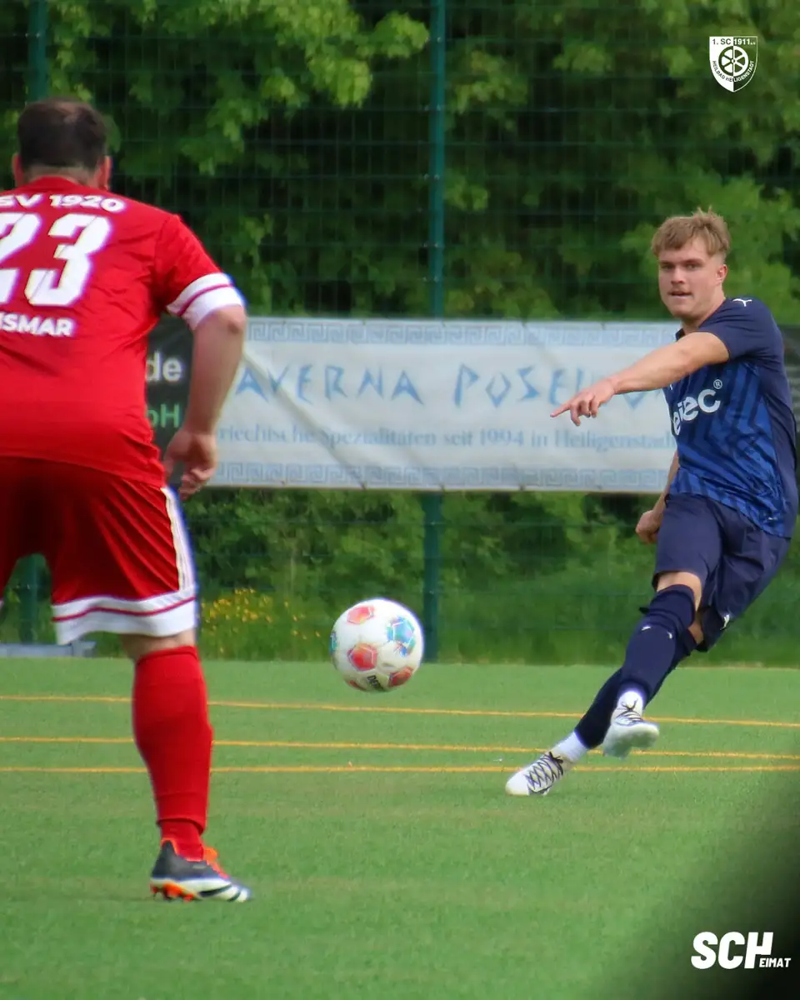
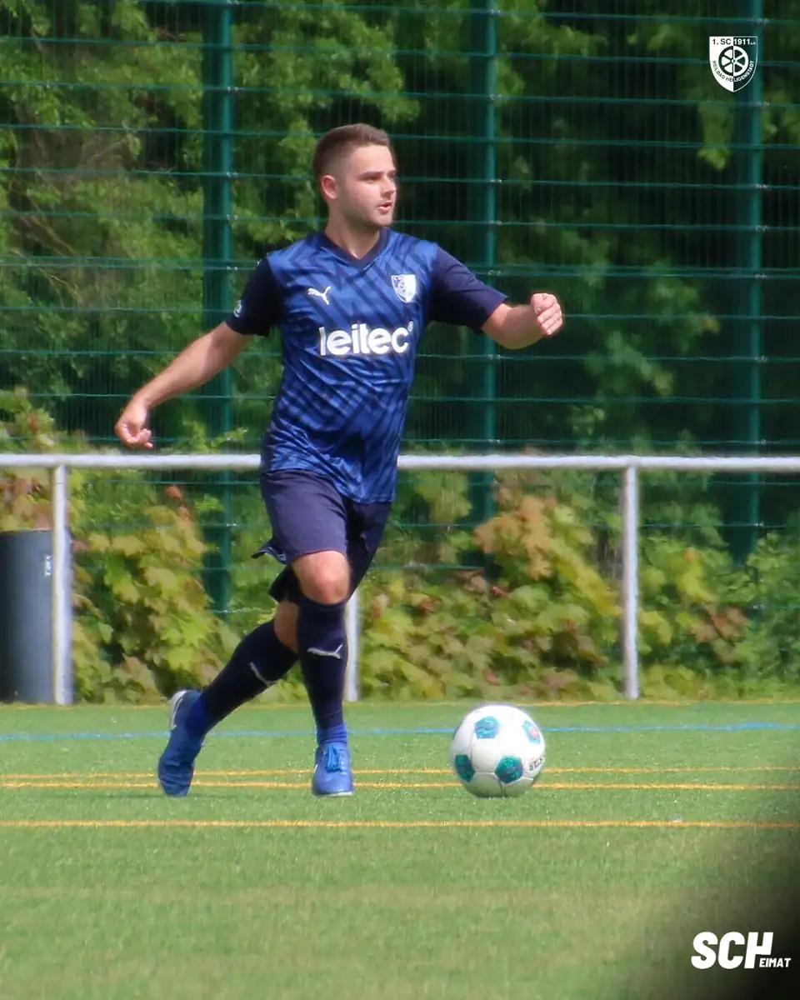
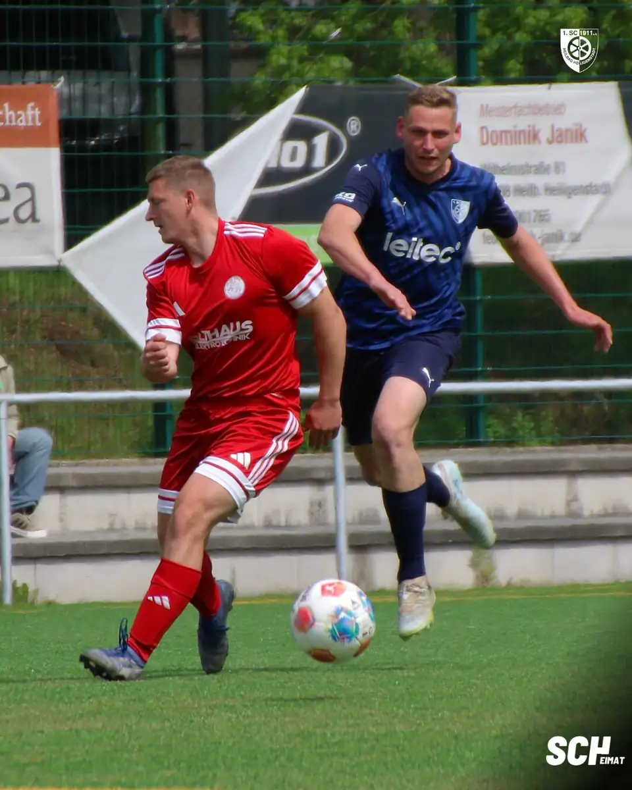
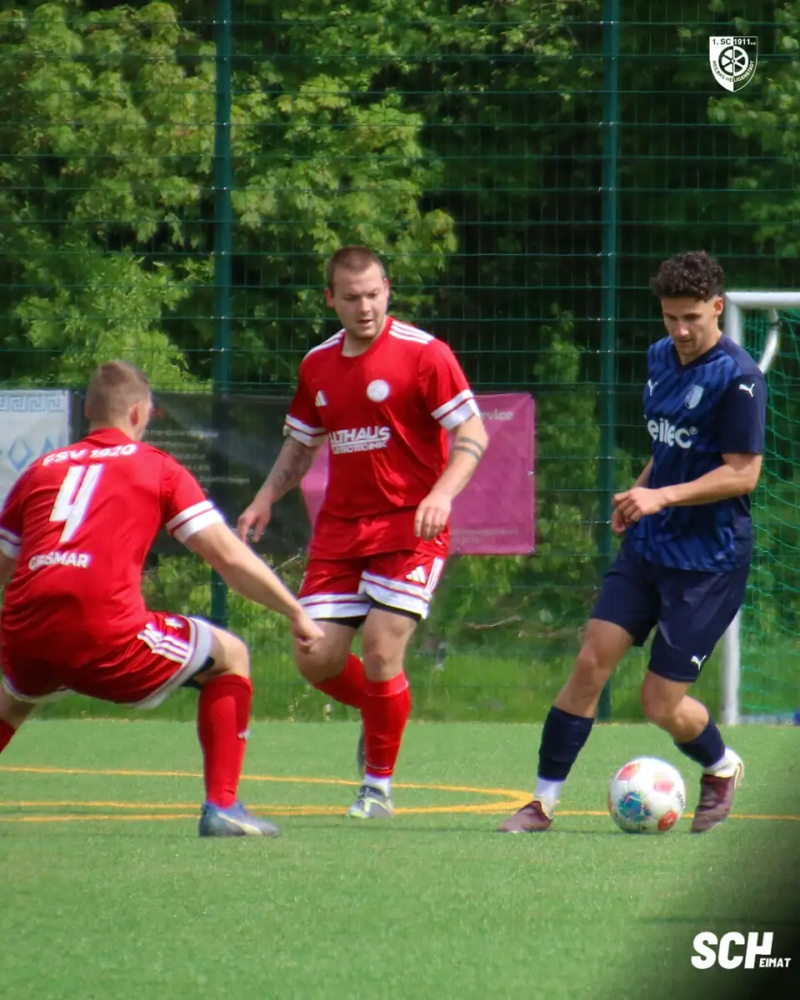
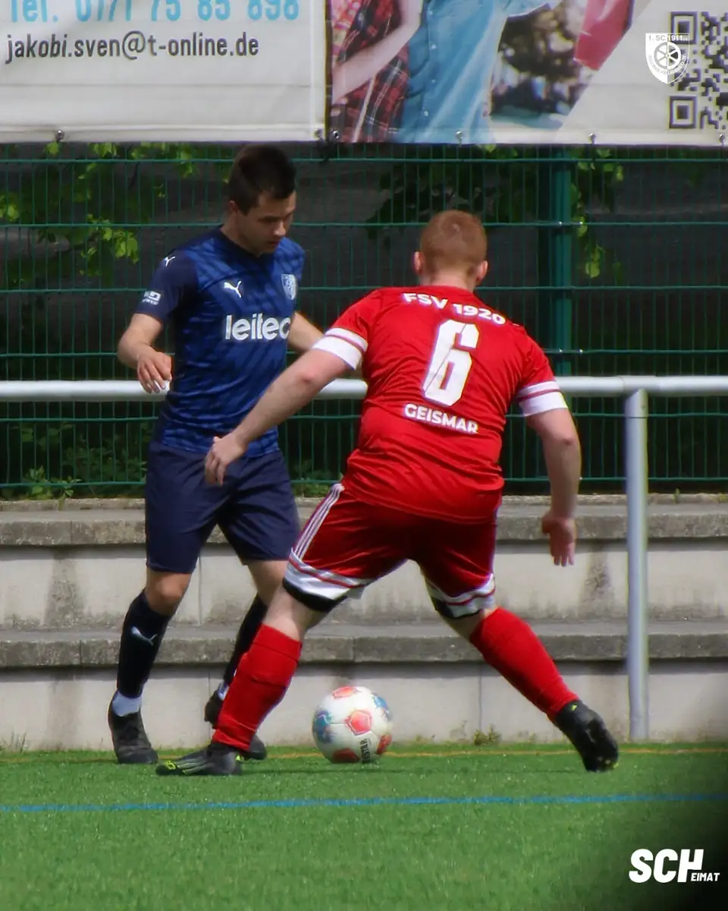
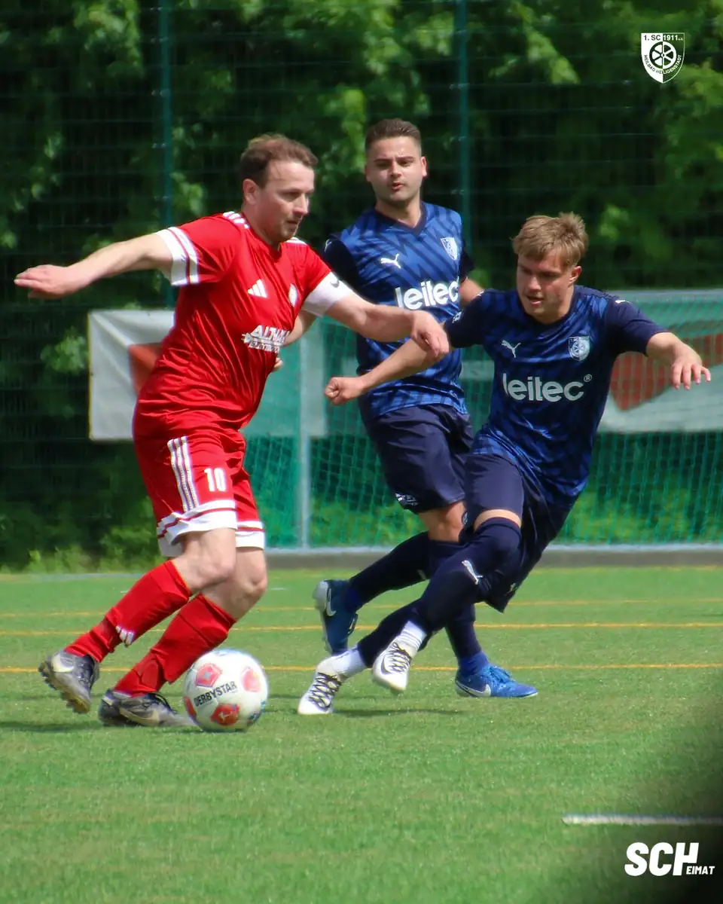
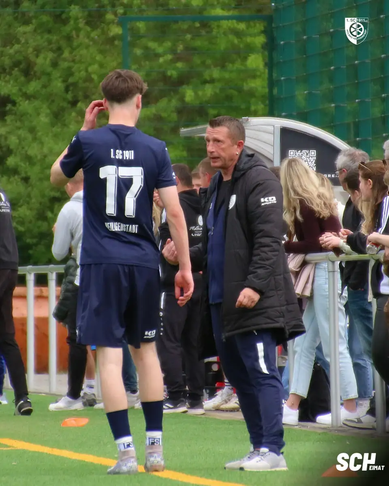

Papst-Elf bleibt auf Kurs – Blitzstart ebnet früh den Weg
Andere Vorzeichen als noch in der vergangenen Woche – doch die Aufgabe war keineswegs einfacher. Mit dem FSV 1920 Geismar war eine Mannschaft im Gesundbrunnen zu Gast, die im Abstiegskampf um jeden einzelnen Punkt kämpft und entsprechend unangenehm zu bespielen ist. Unsere Papst-Elf wusste also genau, was sie erwartet – und lieferte von Beginn an die richtige Antwort. Konzentriert, entschlossen und mit klarem Zug zum Tor gingen unsere Jungs in die Partie – und stellten früh die Weichen auf Sieg. Gerade einmal drei Minuten waren gespielt, da brachte Hermann Ungewitter unsere Farben mit 1:0 in Führung. Und der SCH legte direkt nach: Nur drei Minuten später erhöhte Thomas Kahlmeyer auf 2:0. Ein Auftakt nach Maß, der unserer Mannschaft Sicherheit gab und dem Spiel früh die Richtung vorgab.
Kaiser als starker Antreiber – SCH mit Offensivpower
Auch in der Folge blieb unsere Mannschaft die spielbestimmende Mannschaft. Mit viel Spielfreude, Tempo und guten Kombinationen setzte unser Team Geismar immer wieder unter Druck. Besonders Jonathan Kaiser drückte dem Spiel offensiv seinen Stempel auf, war immer wieder an gefährlichen Aktionen beteiligt und bereitete die ersten drei Treffer stark vor. In der 24. Minute war es Erik Spies, der nach der nächsten starken Vorarbeit von Kaiser auf 3:0 erhöhte. Zwar kamen die Gäste zwischenzeitlich zum Anschlusstreffer, doch unsere Mannschaft ließ sich davon nicht aus der Ruhe bringen. Direkt nach dem Seitenwechsel machte der SCH dort weiter, wo er aufgehört hatte. Thomas Kahlmeyer schnürte mit seinem zweiten Treffer in der 47. Minute den Doppelpack und stellte auf 4:1. Kurz darauf erhöhte Benito Schöneich auf 5:1, ehe Jonathan Kaiser seine starke Leistung mit einem eigenen Treffer krönte und auf 6:2 stellte.
Verdienter Sieg trotz kleiner Schönheitsfehler
Dass Geismar trotz des klaren Spielverlaufs noch zu drei Treffern kam, lag vor allem an eigenen Fehlern, die der Gegner konsequent nutzte. Die Gäste zeigten, warum sie im Abstiegskampf unangenehm zu bespielen sind, und bestraften unsere Nachlässigkeiten eiskalt. Am verdienten Erfolg unserer Papst-Elf änderte das allerdings nichts. Auch Nico Lorenz, der wie schon in den vergangenen Wochen erneut zwei Spiele an einem Tag absolvierte, zeigte eine starke Leistung und konnte sich mit mehreren guten Paraden sowie starkem Stellungsspiel auszeichnen.
Unter dem Strich steht ein souveräner und hochverdienter Heimsieg in einem unterhaltsamen Spiel. Mit etwas konsequenterer Chancenverwertung hätte der Erfolg sogar noch deutlicher ausfallen können. Doch auch so bleibt festzuhalten: Unsere Papst-Elf ist weiter in starker Form, zeigt Spielfreude, Moral und Offensivqualität – und belohnt sich erneut mit drei Punkten.
Spieldaten
1. SC 1911 Heiligenstadt II – FSV 1920 Geismar 6:3 (3:1)
SC Heiligenstadt
Lorenz – Kaiser – Weilandt – Semper – Schöneich (73. Wibe) – Spies – Kahlmeyer – Schäfer (82. Kaufhold) – Strecker – Ungewitter (56. Bertram) – Pingel
FSV 1920 Geismar
Arend – Berger – Springer – Kozber (58. S. Manegold) – Büchel – Strecker – Groß – Schröder – P. Manegold – Martin – Montag (76. Weber)
Schiedsrichter
Werner
Zuschauer
79
Tore
1:0 Ungewitter (3.), 2:0 Kahlmeyer (6.), 3:0 Spies (24.), 3:1 Strecker (29.), 4:1 Kahlmeyer (47.), 4:2 P. Manegold (51.), 5:2 Kaiser (53.), 6:2 Schöneich (54.), 6:3 S. Manegold (62.)






